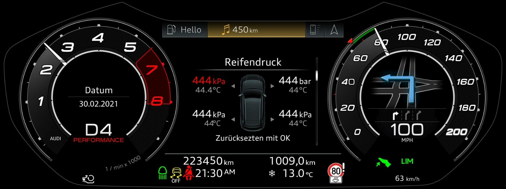

This interactive tool simulates the exact interview question: "An automotive HMI displays a snowflake warning when temperature drops below 5°C and disappears at 4°C (or above). What test values do you select and why?"
HMI Instrument Cluster Output
BVA Test Matrix (3-Point Boundary)
| Value | Partition / Boundary | Expected Status | Testing Purpose |
|---|---|---|---|
| 6.0°C | Valid Warm Partition | OFF | Equivalence class baseline |
| 5.1°C | Immediately Above Boundary | OFF | Verifies warning does not trigger early |
| 5.0°C | Exact Boundary ("Below 5°C") | OFF | Verifies strictly less than (< 5.0 vs <= 5.0) |
| 4.9°C | Immediately Below Boundary | ON | Verifies trigger point for snowflake lamp |
| 4.0°C | Disappearance Boundary | ON / OFF | Hysteresis transition test |
| 3.9°C | Deep Ice Partition | ON | Continuous warning state verification |
Tell the interviewer: "Automotive systems must implement **hysteresis** to prevent display chattering. If a car drives at 4.99°C to 5.01°C, wind and road vibrations would make the snowflake flicker on/off every second, distracting the driver and wearing out the cluster chime. Therefore, it turns ON at 4.9°C and stays ON until it warms past 6.0°C."
Curated directly from the client interview pattern in Interview.pdf. Click each question to view the Simple Words explanation, the Professional Answer, and the Interviewer's Evaluation Criteria.
- Requirement Analysis: Review functional specifications and HMI UX guidelines for ambiguity, testability, and edge cases. Maintain 100% traceability in Jira/Polarion.
- Test Design: Create test suites using BVA, Equivalence Partitioning, and State Transitions. Design automated test cases in Robot Framework/Python.
- Test Environment Setup: Flash target ECU SW onto the HIL bench; configure Vector CANoe/CANalyzer simulation environments.
- Execution & Defect Management: Execute test cases; log comprehensive Jira tickets with synchronized CAN traces and DLT logs.
- Verification & Regression: Retest fixes and execute impact-based regression suites.
- Reporting: Produce Test Summary Report with defect severity metrics, code coverage, and Go/No-Go release sign-off."
- Summary: Structured tag:
[Component][Subsystem] Concise defect statement - Environment: ECU Variant, SW Baseline, HW Revision, Test Bench ID.
- Preconditions: Terminal state (KL15/KL30), Vehicle Speed, Language setting, Active profile.
- Reproduction Steps: Deterministic, numbered steps from a clean initial state.
- Expected vs Actual: Precise contrast against functional specification ID.
- Severity & Priority: ASIL rating / Safety impact vs release blocker urgency.
- Evidence & Logs: High-res annotated screenshot/video, synchronized Vector CANoe
.blftrace, and DLT / logcat logs.
Regression Testing: Executing a broader suite of existing test cases across related, dependent, and critical components to ensure that the bug fix has not caused unexpected side effects or regressions in previously working features."
- Safety-Critical & Regulatory (ASIL / ISO 26262): Cluster telltales (airbag, ABS, brake), digital speedometer, and legal requirements.
- Impact Analysis (Ripple Effect): Review developer pull requests and component architecture. If the Bluetooth stack changed, test audio streaming, handsfree calls, and phonebook sync.
- High-Frequency User Workflows: Ignition ON/OFF cycles, cluster wake-up, volume adjustments, home screen navigation.
- Historically Defect-Prone Modules: Features with a track record of recurrent regressions."
YES Example (Add to Regression): A defect where the digital speedometer froze when shifting between Drive and Reverse while receiving an incoming call. This is a critical safety issue on a core driving workflow. It must be added to the automated regression suite.
NO Example (Do NOT Add to Regression): A minor text alignment glitch in Portuguese when selecting 'Custom Ambient Light Color #5' that only occurred when switching from Swedish in engineering developer mode. This is an ultra-niche cosmetic issue; retesting once is sufficient."
2. Impact-Focused Manual Testing: Test the hotfix changes and immediate neighboring modules.
3. Parallel Execution: Divide test benches by domain (Tester 1: Cluster/CAN, Tester 2: IVI/Audio/Media).
4. Blocker Fast-Track: Escalate any critical failures directly in standup with the customer proxy team.
5. Transparent Risk Sign-off: Deliver the final test report clearly highlighting the executed scope, omitted non-critical suites, and the calculated residual risk for customer acceptance."
Best Practice:
1. Pre-creation Search: Filter Jira by component, affected build, and keywords (e.g.
component = Cluster AND text ~ "TPMS").2. Enrich Existing Ticket: If already reported, the second tester should comment on the open ticket with additional reproduction data (e.g., occurs on both Left-Hand Drive and Right-Hand Drive variants).
3. Duplicate Resolution: If a duplicate is logged inadvertently, immediately link it with 'Duplicates' relation and close it as 'Closed - Duplicate'."
- Test Bench / Environmental Fault: CAN transceiver baud mismatch, unstable DC power supply, or flashing corruption.
- Specification Change (Change Request): The behavior adheres to a newer approved functional specification or UX update.
- Existing Known Issue: A ticket is already open in the sprint or marked as a known limitation in the release notes.
- Non-Reproducible Anomaly without Trace: Observed once but cannot be reproduced despite multiple attempts and lacks diagnostic DLT/CAN logs. (Document as an observation in testing notes).
- CAN Bus Timeout: In Vector CANoe, stop sending the periodic cyclic message (or set the signal alive counter/checksum to invalid).
- Cluster Display Graceful Degradation: Verify the HMI transitions from numeric value to safe fallback notation (e.g.,
--.- °C) within specified timeout (e.g. 500ms), without UI freezing or crash. - Diagnostic Trouble Code (DTC): Read ECU memory using UDS (ISO 14229) / CANoe Diagnostics to ensure the correct DTC is registered (e.g.
U0100- Lost Communication). - Recovery Testing: Re-enable the CAN signal and verify the cluster automatically recovers without requiring an ignition cycle."
- Bus Communication Logs (CAN / Ethernet): Analyze
.blfor.asctraces in CANoe/CANalyzer. Filter by CAN Message ID, Signal name, and timestamp of the failure. - Middleware & Application Logs (DLT): In DLT Viewer, filter by Application ID (APID) and Context ID (CTID). Search for warnings, fatal assertions, and state machine transitions.
- OS Logs: For Android Automotive OS (AAOS), run
adb logcat -v timefiltered by process or crash stack traces. For QNX, inspectslog2info. - Time-Correlation: Correlate user input timestamp on video with the corresponding CAN transmission and HMI redraw event."
Select any real defect from the test screens to generate a ready-to-copy, production-grade automotive Jira defect ticket conforming to Tier-1 / OEM standards.